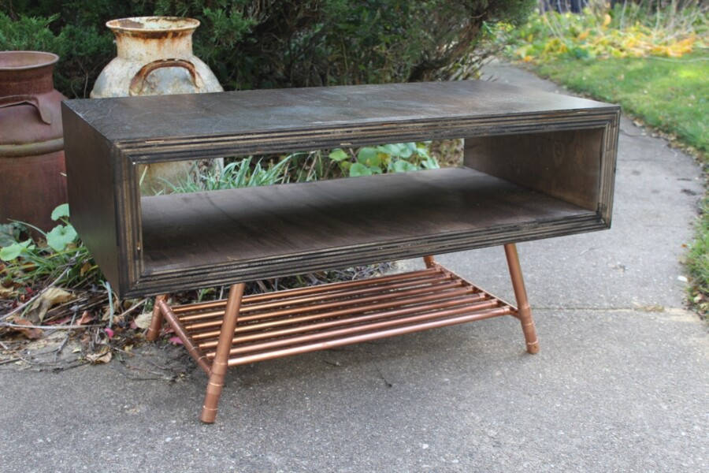

Evanston Woods II
View the work of six local designer/makers: Paul Segedin, Madeline Usher, Len Koroski, David Rubman, Ron Cramer, and Mui Baltrunas. Find unique handmade furniture, sculpture, and accessories.
Evanston Woods will be open Friday, April 24 from 2 to 7; Saturday, April 25 from 11am to 8pm; and Sunday, April 26 from noon to 5pm. Join us for a reception Saturday, April 25 from 5 to 8pm.